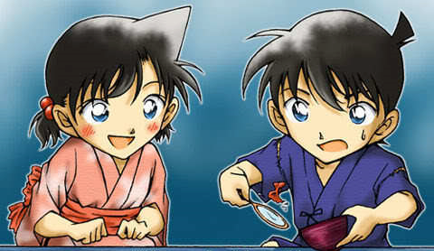

Me in a nutshell

Edogawa Conan is the alias used by Shinichi Kudo in his shrunken form. Shinichi took the appearance of his six or seven year old self after being exposed to a prototype poison called APTX 4869, which he had been forced to swallow by two men in black later revealed to be members of the Black Organization. The poison deaged Shinichi's entire body except for his nervous system and therefore he still has the personality, memories, and incredible deductive ability of his teenage self. Conan's goal is to hunt down the Black Organization and have them arrested for their crimes, as well as find an antidote to the APTX 4869. To do so he plans to make the washout detective Kogoro Mouri famous in hopes of attracting cases related to the Black Organization.
Conan is often treated as a separate character from Shinichi by fans, and often viewed as the main character of the series while Shinichi is viewed as a recurring character. He has become a popular figure in Japan and even appeared at numerous occasions in different anime series (i.e. mainly cameo appearances) as well as other medias.
At the beginning of the series, Shinichi brings his friend Ran Mouri to Tropical Land, a local theme park, to celebrate her victory in the Metropolitan Karate Championships. He later ends up solving a murder case there. As they are leaving, Shinichi witnesses a suspicious exchange between an unknown business man and a man in black in a secluded area by the ferris wheel. While spying on the suspicious men, Shinichi does not notice another man in black, who knocks him out from behind and forces him to swallow a new experimental poison known as APTX 4869. They then leave him to die. However, instead of killing Shinichi, a rare side-effect occurred. Shinichi's body shrunk back to that of his six-year-old self. In desperation and confusion, Shinichi heads back to his house and runs into his next door neighbor and close family friend, Professor Agasa. After a few attempts at proving he's in fact Shinichi, he finally succeeds in convincing the Professor. The latter warns him he must keep his identity secret as the Black Organization will surely try to kill him and others associated with him should they learn the truth.
Shinichi comes up with the alias Conan Edogawa using the mystery author names Arthur Conan Doyle and Edogawa Rampo and pretends to be a distant relative of Agasa's who then places Conan in Ran's care. Ran's father, Kogoro Mouri, owns a Detective Agency which may provide a chance for Conan to run into a case involving the Black Organization. However, Kogoro is a terrible detective with little credibility. Using helpful gadgets that Agasa makes, Conan sets out to improve Kogoro's detective reputation by solving cases for him while also hiding the truth that Conan is really the one solving cases. By knocking Kogoro out at crime scenes with a fast-acting tranquilizer and using a voice modulator to relay deductions in Kogoro's voice, Conan creates 'Sleeping Kogoro'. The conceited Kogoro enjoys his newfound reputation and the money it brings in so much that he doesn't question why he is suddenly passing out at crime scenes and solving cases in his sleep.